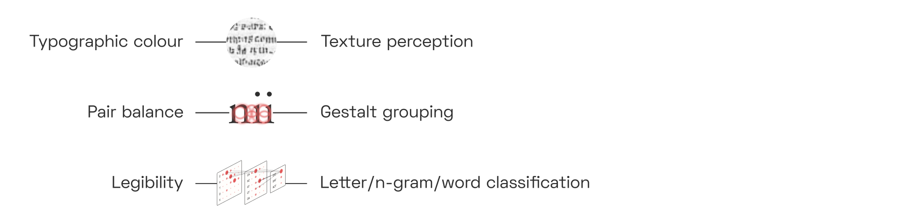
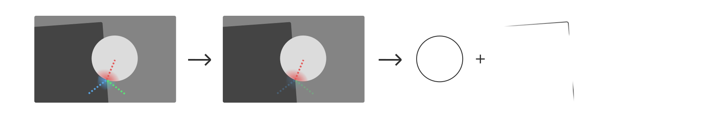
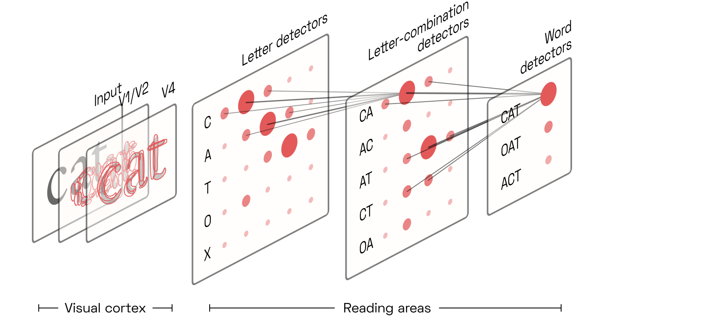
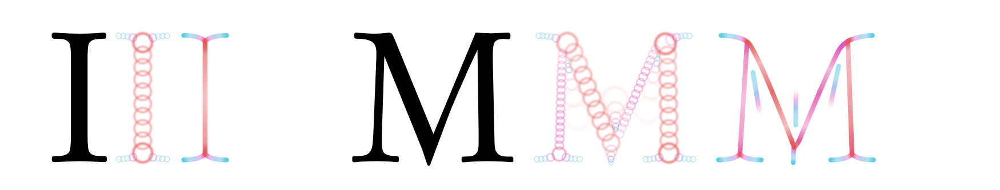
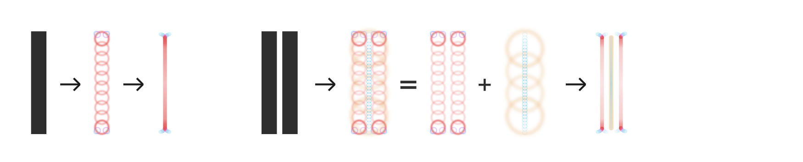
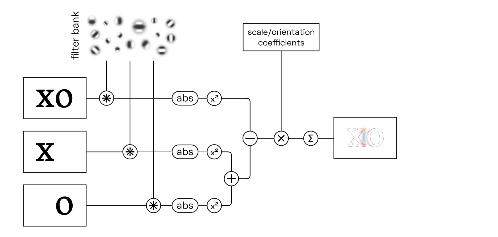

YinYangFit ☯
Modelling for automatic letterfitting, inspired by neuroscience

This article is only half done. Please free to follow the project on Github and check back later for more. Thanks :)
Acknowledgements
This research would not have been possible without funding from Google, for which I have Dave Crossland to thank in particular. I am grateful also to Simon Cozens and others for many valuable discussions.
Abstract
Adjusting letter distances to be visually pleasing is a challenging and time-consuming task. As existing tools are too primitive to reliably handle the infinite variety of typefaces, designers still need to rely on their intuitive judgment. I review how letterfitting fits into the current scientific understanding of how letters and words are perceived in the brain, and present approximate models that can be fitted to to existing, hand-fitted fonts using backpropagation.
Target audience
Designers and developers with an interest in neuroaesthetics.
Epistemic status: provisional
This article is based on a survey of hundreds of peer-reviewed articles, and in line with mainstream ideas in vision and neuroscience research. It is the product of many months of work and countless revisions. That said, even the in-vivo evidence for the suggested models is often indirect or circumstantial. Nothing in this article should be construed as final. I welcome corrections!
Introduction:
Letterfitting refers to the process of adjusting the distances between pairs of 
Red vertical bars show side bearings, blue vertical bar shows a negative kern. It’s often referred to as “spacing and kerning”, because pair distances are the sum of fixed amounts of space around every letter (so-called side bearings) and additional adjustment values for individual pairs (so-called kerns
The heart of the problem: typographers can’t even agree what letterfitting does. Some say that it’s about achieving a certain balance between letter pairs, the judgment of which is to spring from the designer’s personal aesthetic
All three of the above descriptions seem to point to the same story: that skilled designers achieve a pleasing visual balance between letter pairs because they have honed their perception through the careful study of existing fonts, and that perfectly balanced letter pairs also happen to result in perfect legibility and a perfectly even typographic colour. Does that story hold water?
As it turns out, research suggests that colour, balance, and legibility have different neural correlates. They are often in rough agreement, but optimizing for one does not guarantee a good outcome for the others.

Evenness of colour is a question of texture perception; quality of balance is a question of competitive inhibition between perceptual gestalt groups; and legibility is a question of the reliable detection of letters and n-grams from pre-processed visual features. On top of that, all of the above are affected differently by font size and colour contrast.
The premise behind today’s letterfitting tools is that the gaps between letters can be measured and equalized. But human brains don’t perceive gaps; they perceive shapes whose neural representations interact across space in particular ways. If we want to develop robust, universal automatic letterfitting algorithms—algorithms that work on both hairline slab serifs and broad-nib italics, on both captions and headline sizes, on both Latin and Hangul—then we need to build better intuitions for the neural dynamics of our vision system. That’s what this article is about.
In a way, it is surprising that type design and cognitive psychology are so divorced from one
A letterfitter’s objectives
Before we dive into the details, let’s review how the three objectives fit into a broader cognitive science context.
Typographic colour
Typographic colour refers to the visual texture created by the ink on the page. Most obviously, a darker colour is the result of bolder, narrower, more tightly-fit type. But the line spacing contributes to a document’s characteristic texture as well, and so does the angle of the letters (i.e. upright vs. italic) and, ultimately, the design of the individual letters. Some design teachers like to give colour-based letterfitting prescriptions, like “match the black and the white” or “equalize the negative space in the counters with the negative space in the gaps.”
Balance
The brain has a general tendency to group visual features into perceptually coherent objects. Meanwhile, the typographer’s job is to group letters into perceptually coherent words. When the letters are fitted poorly, the perceptual grouping into words will fail: this we call poor balance.

Perceptual grouping networks are a very fundamental piece of our vision circuitry, and not exclusive to reading. Researchers have known about them for a long time, too: psychologists over a century ago described our tendency to perceive the sum, not the parts, of certain arrangements of 
In order to quantify the strength of perceptual grouping between pairs, we need to understand why and how our visual system binds image fragments together.
Legibility
Vision and reading are not the same thing, and neither an even texture nor perfectly balanced pair grouping guarantees good legibility. So what should we optimize for?
As we will see, reading is actually a collection of different modes of perception, each of which corresponds to a different stage of reading acquisition in childhood and to a different brain region. A type designer manipulating letter shapes is performing an entirely different mental task than someone reading text set in their font. In fact, it appears that most designers are not directly optimizing for legibility at all. This topic requires a discussion of the various letter- and word-classifying neural networks in our brain, of their strengths and weaknesses, and of the importance of word-dividing spaces in fusional languages like English.
A brief tour through our visual system: area V1
Our brain’s visual processing system is divided into multiple regions, each of which represents the incoming visual imagery at a different level of abstraction. Anything we see—landscapes, patterns, text—activates neurons in each one of these brain areas. While neurons in the lower-level areas respond to concrete details in the visual input, neurons in higher-level areas respond to the presence of particular configurations of such details. Both low- and higher-level areas are involved in perception, allowing us to simultaneously experience the raw visual qualia and comprehend what we see on a more abstract level.
Whether we are looking at an apple (and recognizing it as such), a tree (and recognizing it as such), or a word (and reading it)–most of of the neurons involved are the same.

Many readers may have had some exposure, however superficial, to the concept of deep convolutional networks. It is tempting to conceptualize the architecture of the visual cortex as such a network: yes, raw visual input enters at the bottom, undergoes convolution through multiple layers, then comes out the top as a neat classification of a word. But perception, and perceptual grouping in particular, is a dynamic process. It is not a computation with input and output, but a dance of electrical activity that evolves through
With that in mind, let’s go on a brief tour through our visual system.
Edge and line detection by simple cells
Sensory input from the eye travels up the optic nerve, through the lateral geniculate nucleus (LGN) on the brain’s thalamus, to the visual cortex at the very back of the

The first phalanx of cells—the primary visual cortex, or V1—performs what amounts to a band-filtered wavelet decomposition. Each neuron here is

These neurons are called simple cells, and we can easily predict their response to a given input, depending on the tuning and location of their receptive

Complex cells
As it turns out, some V1 neurons are less sensitive to phase than others, and some may even respond equally to both lines and edges, as long as scale and orientation match their tuning. Those cells are called complex cells

Coincidentally, contrast and colour are irrelevant to reading—we can read black-on-white just as well as white-on-black—suggesting that it is mainly complex cells that provide the relevant signals to higher-level brain
To be clear, this does not mean that the signals from simple cells are lost or discarded. Just like the signals from colour-detecting cells in the so-called blob regions of V1, which are not further discussed here, the signals from simple cells do contribute both to our experience of vision and to the activity of higher-level brain regions. For reading (and thus letterfitting) purposes, however, we will focus on the responses of complex cells.
Lateral inhibition
Neurons in V1 (and elsewhere in the cortex) use lateral connections to inhibit their neighbours. This is called lateral inhibition. Because the strength of the inhibition depends directly on the strength of the neuron’s own activation, this setup helps the most active neuron to mute its neighbours. This sharpens the response landscape, which is necessary in practice considering that neurons tuned almost to the right orientation and frequency (but not quite) will still fire quite a bit, effectively adding noise to the signal. Lateral inhibition means that V1 neuron’s firing rates take some time to stabilize, something that models may need to take into account.
Contrast sensitivity to spatial frequencies
 Contrast sensitivity function. The vertical gradient in contrast is uniform across the image, but we most easily perceive the mid-frequency gratings even at lower contrasts. Note that the red line, shown here only for illustrative purposes, may not match the contrast sensitivity function you experience at your current viewing distance and screen settings. Another aspect of vision that appears to manifest quite early during visual processing—setting aside the optical limitations of our eye—is our specific sensitivity to spatial frequencies. Humans respond particularly well to angular frequencies of about 2–5 cycles per degree, and unsurprisingly this translates to reading speed as well, especially under low-contrast
Contrast sensitivity function. The vertical gradient in contrast is uniform across the image, but we most easily perceive the mid-frequency gratings even at lower contrasts. Note that the red line, shown here only for illustrative purposes, may not match the contrast sensitivity function you experience at your current viewing distance and screen settings. Another aspect of vision that appears to manifest quite early during visual processing—setting aside the optical limitations of our eye—is our specific sensitivity to spatial frequencies. Humans respond particularly well to angular frequencies of about 2–5 cycles per degree, and unsurprisingly this translates to reading speed as well, especially under low-contrast
We will return to the question of how V1 outputs vary in response to changing pair distances in a later section. For now, let’s move on to how these signals are processed in subsequent areas.
Area V2, Portilla-Simoncelli texture correlations, and crowding effects
Area V1 deconstructs the incoming imagery into thousands of edge and line fragments. Area V2 helps find patterns in those signals, patterns that form the basis for the perceptual grouping effect we are interested in.
Each neuron in V2 takes its input from a combinations of neurons in  V2 cells take their input from a nearby V1 cells, correlating receptive fields across dimensions of space, simpleness/complexity, orientation, and spatial frequency scale.
V2 cells take their input from a nearby V1 cells, correlating receptive fields across dimensions of space, simpleness/complexity, orientation, and spatial frequency scale.
Presumably, the ability to respond to correlations—not just sums—of inputs from V1 is conferred to V2 neurons by their nonlinear activation curve. Consider a toy example in which two V1 neurons each fire with rates between 0 and 1.0. Then a V2 neuron with the following activation curve would fire only if both inputs are sufficiently active, summing to at least 1.5, thereby implementing correlation:

Texture detection via V2 statistics
Unfortunately, we have no direct measurements of what each of these neurons respond to most strongly. However, pre-trained image classification networks contain units in their early convolutional layers that are, presumably, somewhat analog to V2 cells. By iteratively adjusting white noise until these units are maximally activated, we can estimate what kinds of correlations in the input they are tuned to:

On their own, many of these correlations may appear to be meaningless. Together, however, they describe the local texture of an image. As it turns out, a mere few dozen of such correlations are enough to fool human texture perception: we can iteratively generate fake images, starting again from white noise, that result in the same combination of local averages of these presumed V2 responses as in the original

As evident here, a mere approximation of these averaged image statistics measured by V2 is enough to simulate, with eerie fidelity, how we perceive our visual periphery. This is no coincidence: after all, higher-level areas (here, V4) precisely respond to particular configurations of such V2 neurons, so synthesizing images which evoke similar V2 activations will also result in similar higher-level perceptions, even if the actual input signals are quite
Texture statistics and letterfitting
That V2 neurons so effectively capture local image statistics presents us with a first opportunity to reify the heretofore vague concept of typographic “colour” into something concrete and computable: namely, local combinations of such (simulated) V2 responses. If these remain uniform across the whole page, the texture is perceived as even:

In a truly colour-based letterfitting strategy, which should be relatively easy to implement, we would iteratively adjust pair distances within an image of text until a chosen set of V2 responses is nice and uniform across the entire image. And indeed, this would probably be the most effective and biologically faithful approach to achieve a perfectly even texture. Unfortunately, in shifting letters to optimize solely for overall colour, the algorithm would disfigure the gestalten of individual words, at times even rendering them
Surround suppression
When V2 neurons detect texture-like correlations between neighbouring V1 neurons, they tend to return inhibitive feedback signals, especially to the V1 neurons in the center. This kind of “surround suppression”, which acts in addition to the lateral inhibition between V1 cells discussed above, helps mute V1 activity inside similarly-textured

This surround suppression therefore is a kind of early perceptual grouping mechanism, enabled by correlation-detecting V2
Finally, it doesn’t take a cognitive scientist to know that fonts designed based on consistent, repeating elements are easier to
Contour integration and V1 feedback
Not all V2 neurons respond to such peculiar V1 correlations, expressing elements of texture. Some pick up on signals with more human-interpretable salience, such as continuous edges and lines. Experiments suggest that they do so by responding to V1 complex cells that co-align:

This allows these V2 cells to detect continous contours, even if these contours are curved or
Having thus detected a piece of contour, the V2 neuron now sends an amplifying signal to all of its V1 inputs, which in turn increases the input to the V2 cell itself, creating a positive feedback loop between V1 and V2. Crucially, however, this feedback only amplifies neurons that are already firing; it does not induce activity in other inputs (and may even suppress  Typical contour integration test image demonstrating contour pop-out. Adapted from
Typical contour integration test image demonstrating contour pop-out. Adapted from

This kind of feedback loop is a simple grouping mechanism of its own, and responsible for many (though not all) observations of prägnanz due to collinearity. As we will see below, however, it is also an important ingredient in letter and word perception.
V4 and higher-level areas
The next area of the visual cortex, area V4, mirrors the architecture of V2 in that it performs a set of convolutions detecting correlations between its inputs. It is reasonable to conceptualize V4 as V2, only with larger receptive fields. Its neurons respond, once again, to a large variety of spatial correlations in the input image, although these correlations can be more complex, looking perhaps more like this:

Once again, some neurons tend to be more tuned to textures while others detect straight or curved contour fragments, although there certainly is overlap between the two

Perceptual grouping based on border ownership
Consider that navigating our natural environment requires us to correctly identify three-dimensional objects in three-dimensional space. But the shape of these objects varies heavily depending on perspective—after all, we only see a two-dimensional projection of reality—and is available only as a collection of the abovementioned V4 contour fragments. What’s more, the contour detectors will activate on both sides of each object:

How can we recognize a half-overlapped object, discount its perspective foreshortening and assign it a relative depth, going only by a population of V4 contour detectors, half of which are gratuitously detecting the objects’ outsides? The solution lies in feedback loops that enable perceptual grouping.
The first feedback loop connects V4 with a special class of V2 neurons called border ownership cells or B-cells. These B-cells, like the V2 contour-integrating cells already discussed, detect the presence of edges based on the activity of V1 complex cells. While they are agnostic to the edge’s contrast polarity, B-cells fire only if they are on one particular side of an object. For instance, the B-cell whose receptive field is marked in red below only detects edges on the left side of objects, as indicated here by the small protrusion pointing toward the

This is remarkable. After all, the B-cell only sees a single edge. It cannot know which part of the object it is on; its receptive field is much too small. So its activity must be gated by a neuron which does: namely, one of our higher-level V4

There is an entire population of B-cells, distributed across V2’s retinotopy. For instance, consider a right-side B-cell (blue below) neighbouring our left-side B-cell. Both B-cells are engaged in feedback loops with V4 neurons while simultaneously inhibiting local competitors—i.e., each other—in proportion to their own activation strength (recall our discussion of lateral inhibition in V1):

If the interior (red) V4 cells now were to fire more strongly than the exterior (blue) ones, then the inward-pointing (red) B-cells would quickly inhibit the outward-pointing (blue) ones, firmly establishing that the border belongs to an object on the right. What would cause the interior (red) V4 cells to dominate?
Research suggests that higher-level cells, perhaps in the posterior inferotemporal cortex, respond to combinations of V4 contour-detecting neurons centered on the same retinal location. Such cells effectively group together the borders owned by an object, and are therefore called G-cells.

Because the external (blue) B-cells and V4 contour signals do not combine to excite a higher-level G-cell, they do not receive positive feedback, and lateral competition (between B-cells, and likely also between V4 and G-cells) quickly silences them.
The exact receptive field of each G-cell is likely quite unique, but a popular approach is to assume that they are

This means that the square in the example above would strongly activate a circular G-cell in the center, which takes input from V4 contours on all four sides of the square, and somewhat less strongly activate the circular G-cells along the square’s diagonals, which take input from two sides of the square:

G-cells skeletonize shapes
Once B-cells and G-cells have settled into an equilibrium, the locus of peak responses of G-cells across different scales neatly represents the skeleton of the shape, shown on the

This skeletonization step is critical to object recognition. It translates a shape’s contour fragments into its underlying geometric structure in a way that is very robust to perspective

Although the shared features of the skeletons (counters, stems, etc.) appear at different scales for different letter shapes, they are present in the same configuration for all of them. This is true even for letters that are outlined (last row), as V4 contour detector neurons respond primarily to the contour, not to the fill (or the absence of fill).
When is a stroke perceived as a contour, and when does it turn into a shape of its own right, a shape that owns contours on either side? With letter weights ranging from hairline to ultra-heavy, this is a particularly salient question:

The hairline letter is, arguably, too thin to allow readers to clearly perceive border ownership of the left and right side of each
By the way: that G-cells are presumed to interact with circularly-arranged populations of contour detectors, thus skeletonizating shapes, aligns neatly with the Gestalt principle of convexity: after all, it is circular shapes that are most easily perceived as coherent objects, while more concave contours add visual complexity at the expense of prägnanz. Of course, the preference for convex shapes would not be possible if V4 contour detectors were not also overwhelmingly tuned for convex contour
Competitive contour integration along T-junctions
Before we discuss how this perceptual grouping plays out across letter pairs and entire words, one more phenomenon should be mentioned for completeness’ sake. Consider the following situation:

Here, the circle is perceived to be in front of, and overlapping, the dark shape. We intuitively assume that the dark shape continues with a straight edge behind the circle, and also that it continues beyond the edges of the image, as if the scene were seen through a window.

The T-junctions created by overlapping shapes activate three sets of convex contour detectors, illustrated here in red, blue, and green. Experiments suggest that between such configurations of contour detectors, it is the straight, continuous one (here in red) that inhibits the other
Both effects combine in the classic illusionsW by Gaetano Kanizsa, in the square, which is evoked mainly through its skeleton at the corners, creates T-junctions with the flankers that are invisible yet strong enough to determine relative depth. Now, contour-integrating cells in V2 and V4 are at liberty to connect the loose ends via a straight edge, in collaboration with G-cells that encode the likely skeleton of the dark shape. We thus perceive the dark shape as the corner of a rectangle of indeterminate size. In addition, the T-junctions contribute to the depth perception that layers the two objects—but this is less relevant to perceptual grouping.
Attention, crowding, and the spread of activity
To complete the perceptual grouping process, the activity in the B-cells, V4 and G-cells must spread out across objects until it envelops the entire perceptual group. This happens naturally and quickly. For instance, neural activity will quickly spread along contours, thanks to the feedback connections from contour-integrating V2 and V4 neurons to their inputs, which then activate other contour integrators in turn, which feed back to other inputs, etc.
For neural activity to spread out is healthy and useful. But we are interested only in one object, or in one perceptual group of objects, at a time. The challenge lies in containing the spread to the perceptual group of interest only. Naturally, the brain relies on inhibitive connections between neigbouring neurons to slow the spread of activity.
In letterfitting, the objective is for neural activity to spread from one letter to its neighbours both left and right. At this point, we can revisit the illustration from above and consider how “balance between letter pairs” is a question of perceptual grouping mediated by the spread of neural activity (and the inhibition of same):
Attention
A key concept in this context is attention. Given the ease with which neural activity spreads outwards via feedback and feedforward connections, any little bit of extra activity injected into the network will quickly result in extra activity in the whole nearby network. Of course, neural activity is constantly provided by the retina, and most of that activity comes from the fovea. But we can also pay attention, quite literally: by feeding top-down signals into a single G-cell, for example, we can amplify all associated contour detectors, B-cells and even V1
Crowding and grouping
One situation in which this containment can fail is when texture detectors are recruited into the frenzy of activity, and these texture detectors then compete with smaller-scale feature detectors that we rely on for object identification. In the following illustration, it is very difficult to make out the uppercase V while focusing on the center cross, even though recognizing the left-hand A, which is exactly the same distance away, is no problem. Any attempts to attend to the V just reroutes more activity into the texture representation.

This phenomenon, called crowding, has captured the fascination of reading researchers since the 1970s. The severity of crowding increases with the distance from the fovea, as the periphery contains more, and much larger, texture-detecting
That crowding and perceptual grouping are two sides of the same coin—namely, the spreading of activity across neural populations—is a surprisingly recent idea, but a very convincing
Summary
At this point, let’s recapitulate what happens to the image of letters on a page:
In a forward sweep from V1 to V4, edges and lines in V1 activate contour-integrating V2 neurons (mostly in the fovea and parafovea) and texture-detecting V2 neurons (mostly in the periphery). These, in turn, activate V4 neurons that detect more complex visual patterns, among them convex contour fragments.
As these V4 signals begin to excite higher-level brain areas, feedback signals from V2 to V1 and from V4 to V2 begin to rapidly reinforce spatially integrated patterns (mainly contours).
Surround-suppressive feedback mutes spatially redundant signals, allowing boundaries to pop out between textured surfaces even in the absence of strong contour signals.
Lateral inhibition between neurons further prevents activity from spreading, as more active neurons can dampen their neighbours. Because signals travel more slowly through intracortical horizontal connections, lateral inhibition takes a bit longer to kick in fully.
Top-down attention exerted on individual (or small populations of) high-level neurons shifts the dynamics of the entire network. A little bit of attention can go a long
way. Thomas Miconi and Rufin VanRullen describe howPDF a little bit of extra activity can effectively shift the entire receptive field of a neuron. In Stefan Mihalaş et al.’s2011 simulations , referenced above, increasing G-cell activity by a mere 7% was enough to reproduce the effects seen in human subjects.As neural activity travels outwards along contours and textures, some regions (retinotopic, not cortical) are suddenly flooded with activity. This new activity, in turn, can command attention, via direct connection to higher-level
areas. The frontal eye fieldsW seem to be one brain region involved in keeping track of visual attention, and in making saccades when necessary.
If this understanding of perceptual grouping is correct, then the objective of letterfitting—or, at least, of the Gestalt-based variant—boils down to ensuring that neural activity can spread uniformly from a letter to both of its neighbours until it envelops the entire word, without coagulating into separate, smaller, more stable perceptual groups.
Reading in the brain: from letter skeletons to words
Before we explore in more detail how neural activity might bind letters into pairs and words, let’s briefly review how all of this fits in with recent models of reading. In other words: what happens after V4, and what does it tell us about how letterfitting influences legibility?
Researchers broadly agree that reading is based on the same mechanisms as early vision: convolution and feedback. In a first step,
In the feedback stage, each word detector competes (via lateral inhibition) with the others and sends positive feedback back to the hierarchy of letter-combination detectors that activated it, which also compete. This results in a vigorous electrical back-and-forth for about a quarter of a second, until activity settles on the winning word detector. Because the word detectors are largely at the mercy of the brain’s language circuitry that parses sentences based on grammar and semantic associations, the raw signal from the letter-combination detectors is easily overruled in our awareness.
Robust interactivity via n-gram detectors
The archetypal letter-combination detector responds to ordered pairs of letters, often called “open bigrams” in the

This uncertainty results in the (light, but nonzero) activation of reverse bigrams, which allows us to read wodrs wiht jmbuled
Diversity of brain areas involved in reading acquisition
This neat hierarchy of bigram detectors—and more generally, n-gram detectors—takes lots of reading practice to develop, but it is becoming increasingly clear that this is only one of many steps in the long and awkward process of reading
In experienced adult readers, the n-gram detectors appear to be directly connected to letter-shape detectors the visual cortex. The development of this shortcut is the final step of learning to read, and these letter-shape detectors are no longer associated with the conscious experience of e.g. handling a letter-shaped toy. We don’t lose those original letter-representing neurons—but we don’t make use of them when reading quickly.
Temporal vs. spatial encoding of n-gram sequences
The n-gram detectors are used to letters arriving in temporal sequence, and experiments suggest that even the “fast” adult letter detectors still activate the n-gram detectors in series, perhaps via lateral and feedback inhibition coupled with imperceptibly fast (≈16ms) gamma
But whether or not the distance between letters is encoded temporally or spatially (i.e. via convolutional filtering), it seems clear that the activation of n-gram detectors depends directly on the physical distance between printed letters. In other words: we read best what we are used to; legibility is a question of conditioning.
Of course, this seems disappointing. If conditioning is all that matters, why not simply copy the metrics from other fonts? How can we justify our tedious efforts to model neural Gestalt dynamics? The answer, of course, is that the tuning of n-gram detectors is only one of several factors in legibility, and by far the most forgiving one. Much more important are letter classification and word segmentation, both of which are questions of Gestalt.
Letter classification
Ironically, interference between letters is actually rather negligible in grid-based
Word segmentation
Besides letter classification, legibility depends on successful word
Our previous discussions might suggest that during reading, word segmentation happens as a result of attention spreading outwards to the word boundaries, thereby allowing us to select a single word at a time. However, experiments suggest that reality is not that simple. It appears that during fast reading, multiple words are perceived and processed at
One plausible explanation is that the activation of the ol bigram detector is a bit weaker in the first pair, whereas the lo bigram detector is weaker in the second. Given our ability to read jumbled letters, this may not seem like a reliable mechanism. But such ambiguous word pairings are extremely rare, and when they do occur, our grammar-based language circuitry would quickly resolve any ambiguity. If this is correct, then word segmentation is purely a result of neighbouring words not being able to co-activate n-gram detectors sufficiently to cause confusion. To prevent accidental word segmentation, a letterfitting model would need to contain the entire response curves of bigram detectors.
Another possible explanation may be that word-initial and word-final letters may be perceived as distinct from word-central letters. If that were true, transposing letters such that initial or final letters are jumbled out of place would effectively amount to letter substitution, rather than mere transposition. And indeed, ujmlbde etxt is much more difficult to decipher than jmulebd txet, although the number of transpositions is equal. If this theory is
Still needs clearer explanation. How to justify we can deal with evenly tracked-out text, where spaces are a relative phenomenon?
Human designers fit letters based on gestalt grouping
At this point, it is worth noting that type designers try hard not to engage their reading circuitry when fitting letters. Instead, they adjust letter pairs by staring straight at them, sometimes flipping them upside down to really see them “as they are”.
That human designers are so successful with such a purely gestalt-based approach is encouraging: it suggests that gestalt-based algorithms can be used widely, leading primarily to a perception of visual beauty (or perhaps the absence of visual distractions), and indirectly to good
From perceptual grouping to letterfitting
Given a pair of letters, our objective is to minimize the risk that a word boundary is perceived between them (by fitting them tightly), while preserving the identity of both letters (by not fitting them too tightly).
[image]
With B-cells and G-cells, which correspond to configurations of V2 and V4 contour detectors, we now have the vocabulary to describe where and how this trade-off takes place as the two letters approach one another.
Losing a letter’s skeleton
At the scale of the stem thickness, each letter activates a population of G-cells corresponding to its medial axis skeleton. Primarily, it is the letter’s ink that gets skeletonized; but in some situations, counter-space features might be recruited as well:

As noted, these skeletons stay relatively invariant across font styles, enabling letter-detecting neurons to function simply via spatial integration of particular skeleton
Left: A simple cell activates fully, thanks to the presence of the left letter’s right stem. Right: Tigthening the pair places the neighbouring letter into the cell’s receptive field, reducing its activation. To illustrate this point, let’s consider a simple cell tuned to a light-dark-light pattern. The left letter of a pair is positioned such that its right-hand stem coincides with the “dark” region, activating the cell. We now move the right letter closer to the left. Eventually, its left stem will enter the cell’s receptive field in the “light” region. Even though the letters are still a considerable distance apart, this will reduce the cell’s activation. One way to think about this is that to our visual system, whether two letters are overlapping isn’t a binary question; it rather depends on the spatial frequency in question.
Therefore, in locations where two letters approach very closely, only the finest-scale complex cell activations will stay intact. This grossly reduces the activation of B-cells and, in turn, of the G-cells that constitute the skeleton from them:
On top of that, G-cells located in the gap now absorb some activity as well. This creates ambiguity about the polarity of border ownership in the gap, and the associated inhibition further dampens the G-cells that make up the stems’ skeletons.

Note that there is also a set of larger G-cells centered on the gap, encompassing both letters. This is a classic example of perceptual grouping: activity corresponding to the left letter’s outer edge will filter up to these larger G-cells, which will feed back to the right letter’s outer edge. Attention can be deployed at different scales, allowing us to shift the polarity of B-cells to focus on the gap, on either letter, or on the pair as a whole.
The complexity is quite impressive, and we have not yet taken into account amplifying effects from contour integration, both along the stems and across gaps, which in turn create illusory T-junctions, which lead to additional suppression, etc.
Generally, and attentional effects notwithstanding, we need to worry about any effects that draw neural activity away from the letters’ original skeletons. A computational model must therefore compare the skeletons of the standalone letters with the skeletons that remain once they are placed together. Different frequency scales should be weighted differently when the losses are tallied up, such that degraded stem skeletons are penalized more heavily than degraded serifs. In more advanced models, pre-trained letter classification networks could be used to determine the parts of the skeleton most relevant to distinguishing the letter in
Losing a word’s edge
While placing letters too close together puts their skeletons at risk, placing them too far apart can compromise the integrity of the word as a perceptual group. This effect is more difficult to model, because letterfitting algorithms deal with pairs of letters at a time, while words can consist of many, many letters at once.
A wider-than-average gap in the middle of a word will stand out for multiple reasons. In long words, it will appear salient because it receives less surround suppression; it offers less opportunity for horizontal integration of letter contours along the baseline and x-height; and it evokes the activation of larger-scale V1 complex cells, translating to a stronger activation of (more, and larger-scale) B-cells. This, in turn, has a particularly noticeable effect on G-cells of x-height scale, or larger:
In principle, this is a natural encoding of word boundaries: gaps that are wider than average will activate intra-word G-cells more strongly than smaller gaps. Attention-induced neural activity is therefore more likely to spread up to such gaps but no further.
The shape of a gap’s inner edge can contribute to this effect or weaken it. Round letters activate G-cells more strongly; o’s are so perfectly convex that even a small gap is sufficient for them to halt the spread of neural activity beyond it. In alignment with gestalt rules, an o is the perfect way to cap off a string of letters into a optimally rounded-off perceptual group. Type designers know that to prevent this from fragmenting a word, round letters need to be fitted more tightly than straight ones.
When two letters get closer to one another within a word, the risk of fragmentation at their gap drops thanks to the weakening of the V1 complex cells that indirectly enable the activation of large, fragmentation-inducing G-cells. In other words, the same mechanism is responsible for both the degradation of letter skeletons and for word
An effective letterfitting algorithm would quantify this drop in fragmentation risk, subtract it from the penalty associated with skeleton loss, and iteratively search for the pair distance that minimizes the resulting total penalty.
But letterfitting algorithms only see two letters at a time. This means that for some letters, the degree of inherent fragmentation risk appears much lower than it actually would be in the context of a word:
Working with more than two letters doesn’t solve the problem either: in an exotic font, letters could be arbitrarily thin or wide. Of course, we know from experience that the width of a letter should have little to no influence on its tendency to fragment a word, and so it is in the context of other letters; and yet modelling the pair is difficult.

Explain the asymptotic length-invariance of parallel stems
Explain round-round interactions via weaker contour integration and less disruption of V4
Explain IUL via balance between weaker horizontal contour integration and stronger inhibition from false inter-stem medial axis (b/c smaller radius).
Illustrate effect of serifs, italics, x-height and weight
Building practical letterfitting algorithms
Unfortunately, the dynamism of the scientific model(s) introduced thus far makes them unsuitable for use in practical letterfitting tools for type designers. Although it is relatively straightforward to set up systems of coupled differential equations representing individual neurons, integrating them at a sufficiently fine spatial resolution is immensely costly, and doing so over many iterations for each letter combination is outright infeasible, at least with consumer-grade hardware. We therefore need to consider potential
Modelling activations of V1 cells
As explained above, V1 simple cells are typically modelled as responding linearly via a simple Fourier-domain multiplication with a bank of bandpass filters G(s, o), where s is the frequency scale and o the
S_\mathrm{V1}(x, y, s, o) = \mathcal{F}^{-1}(\mathcal{F}(I(x, y)) \mathcal{F}(G(s, o))),

where \mathcal{F} is the Fourier transform. For instance, to retrieve wthe activation of representative simple cells at phases 0°, 90°, w180° and 270°, one ould half-wave-rectify as follows:
\begin{aligned} S_{\mathrm{V1, 0\degree}}(x, y, s, o) &= |\mathrm{Re}(S_1(x, y, s, o)| \\ S_{\mathrm{V1, 90\degree}}(x, y, s, o) &= |\mathrm{Im}(S_1(x, y, s, o)| \\ S_{\mathrm{V1, 180\degree}}(x, y, s, o) &= |-\mathrm{Re}(S_1(x, y, s, o)| \\ S_{\mathrm{V1, 270\degree}}(x, y, s, o) &= |-\mathrm{Im}(S_1(x, y, s, o)| \\ \end{aligned}
Traditionally, complex cells were thought to sum the outputs of nearby simple cells of equal scale and orientation. This is now known to be a gross oversimplification. In software, a summation-like approach is nevertheless taken to approximate the output of complex cells C_{\mathrm{V1}}, namely a simple computation of the absolute magnitude of the complex tensor:
C_\mathrm{V1}(x, y, s, o) = |S_\mathrm{V1}(x, y, s, o)|^2
This is often called the local energy. The squaring operation shown here is often used in the literature to approximate the nonlinear behaviour of complex cells in particular.
A simple pair-differential model of interference in V1
Most existing letterfitting algorithms rely purely on geometric features in the spatial domain, ignoring interference effects in the frequency-domain that result from the band-pass filtering in V1.
When two letters are far apart, i.e. farther apart than the diameter of the largest relevant V1 receptive fields, they do not interfere in
Conveniently, we get the magnitude of this reduction for free: because simple cells are assumed to be just as linear as the Fourier transform, S_{ij} = S_i + S_j, and any reductions correspond to phase cancellations between the complex-valued S_i and S_j.
This offers us a straightforward way to visualize how approaching letter shapes affect one another’s perception in the visual cortex: we simply look at the changes to the local energy as a result of placing the two letters next to one another:

Note that while the interference |S_{ij}| - |S_i| - |S_j| is always destructive for simple
Granted, this alone does not a letterfitting algorithm make. But this very simple frequency-based representation already captures many of the geometric relationships that most existing letterfitting algorithms need to approximate via heuristics and epicycles.
Quickly compare to existing gap quadrature models.
Comment on tuning parameters; pair gains approximate word-scale grouping strength, pair losses approximate stem-scale losses. Does not consider contour pop-out or actual grouping dynamics; does quite poorly on uppercase letters.
Explain training this + simple spline or neural net on existing fonts via backprop for a first approximation. Show results.
Modelling lateral inhibition via divisive normalization
 Solid line: hyperbolic ratio curve, a.k.a. Hill function or Naka-Rushton function. Dotted line: monotonic polynomial (e.g. x^2). Of course, the squaring operation in the expression for complex cell activations is a rather unrealistic (if practical) choice. In a real cells, the firing rate will level off after the input has been increased beyond some limit. A popular model for this is the hyperbolic ratio sigmoid
Solid line: hyperbolic ratio curve, a.k.a. Hill function or Naka-Rushton function. Dotted line: monotonic polynomial (e.g. x^2). Of course, the squaring operation in the expression for complex cell activations is a rather unrealistic (if practical) choice. In a real cells, the firing rate will level off after the input has been increased beyond some limit. A popular model for this is the hyperbolic ratio sigmoid
y = \frac{fx^k}{\beta^k + x^k}
The f scales the curve vertically, k makes the kink steeper, and \beta shifts the threshold to the right. Consider how the numerator increases the firing rate, and the denominator decreases it. For relatively small values of x, \beta^k dominates the denominator, yielding a scaled-down version of fx^k (values of about 2 or 3 are common for k, in agreement with the square often used). But once x^k gets large enough, \beta^k pales in comparison, and we are left approaching f
This formula is particularly relevant thanks to lateral inhibition, a common architectural pattern in the brain in which neurons within a cortical area suppress their neighbours in proportion to their own firing rate. Locally, this allows the most active neuron to suppress its neighbours more than those neighbours are able to suppress it in return. Lateral inhibition thus sharpens peaks and flattens valleys in the activity landscape; it is a simple and effective way to boost salient signals relative to the weaker ones that inevitably arise from the correlations between similarly tuned convolution filters. In V1, lateral inhibition thus sharpens the orientation and frequency-scale signals, while also normalizing local contrast.
Because lateral inhibition is a recurrent process that takes time to reach a steady state, it is most accurately modelled using a system of coupled differential equations which describe the time dependence of each neuron’s firing rate on its neighbours. Conveniently, however, the steady-state activations can also be approximated directly using our hyperbolic ratio model, by simply sneaking the neighbouring neurons’ activities into the
y_i = \frac{fx_i^k}{\beta^k + \sum_j w_j x_j^k}
This approximation is called divisive normalization. One can find many variations on the above formula in the literature: extra constants, extra square roots in the denominator, extra rectifiers, etc.; but the core idea is always the same.
This raises the challenge of determining the right values for w_j, i.e. modelling the inhibitive strengths of neighbourly connections. Researchers have collected
Extending our model to incorporate more dynamics
Lots of work missing here …
Brief nod to residual nets, which effectively unroll the dynamics over a few fixed time steps. Also mention Ricky Chen’s Neural ODE option.
Potentially feasible: one forward sweep; V1 → V1 DivN → V2 → contour integration DivN → grouping via fuzzy circular G cells → feedback to V2 B → update G cells. Take difference between pair and letters; weight and integrate; backprop-fit against existing fonts. Show some results.
Appendix: Existing letterfitting tools
Most existing approaches operate either on the distance between stems, or on the area of the gap between them. Some are hybrids, more complex, or unpublished; finally, there has been some experimental work using neural nets:

Fixed-distance methods: A family of approaches that insert pre-defined distances between letter pairs. In their simplest incarnation, these heuristics are equivalent to simply adding sidebearings to every letter, without any kerns. Kernagic, inspired by Frank Blokland’s research, uses heuristics to identify stems or stem-equivalents (such as the round sides of an o) in every letter shape, and then aligns them. This works reasonably well with very regular type (think blackletter), but manual adjustments are usually required. Less well known is Barry Schwartz’ anchor point implementation of what amounts to basically the same idea. Adrian Frutiger, Walter Tracy and Miguel Sousa have devised similar systems, described in Fernando Mello’s MATD thesis. The legendary Hz-ProgramW is also included in this category, as its patent application reveals that letter pair distances were simply stored in a hardcoded table.
Gap area quadrature: A family of algorithms that attempt to quantify and equalize the perceived area of the inter-letter gap. The crux, of course, lies in deciding where the gap ends. HT Letterspacer, the crudest one of these tools, considers everything between baseline and x-height (modulo some minor refinements). Simon Cozens’ CounterSpace uses blurs and convex hulls to more effectively exclude regions that arguably don’t belong to the gap (such as the counter of c). My own Electric Bubble model measures Euclidean instead of horizontal distances, but imposes geometric constraints that produce similar results to CounterSpace. CounterSpace currently wins in terms of performance-complexity ratio but it, too, struggles to fit certain letter pairs.
Other shape-based methods: These include more exotic approaches, such as stonecarver David Kindersley’sW “wedge method” from the 1960s, which operated on letter area moments of inertia (and didn’t really work), and iKern, which produces great results but, just like Adobe’s Optical Kerning feature, remains unpublished. Last but not least, the TypeFacet Autokern tool identifies parts of letter outlines that jut out horizontally, and adds kerning to compensate, based on a few parameters.
Neural nets: Yes, we can train convolutional nets to recognize images of well-fitted and poorly-fitted type. Simon Cozens has built several versions of his kerncritic model (formerly AtoKern), and the recent ones perform surprisingly well on many (if not all) pairs. While neural nets are fascinating, they tend to be black boxes: we can only make guesses at how they work, and we cannot tune their behaviour to suit our taste. This problem holds not just for convolutional nets, but for statistical function approximators in general; I do not discuss them further here.
Honorable mention: Bubble Kerning is a proposal that type designers draw a bubble around every letter, such that software can automatically find pair distances by simply abutting the bubbles. While this isn’t technically a letterfitting heuristic at all, it’s still worth mentioning as a neat idea that could perhaps save designers some time. Toshi Omagari has built a Glyphs plugin.
Appendix: Finding side bearings and kerns from pair distances
Given a set of pair distances (measured as the horizontal component of the line between outline extrema) d_{ij}, where i and j index the left and right glyph from a set of glyphs G, we can find the optimal assignment of side bearings and kerning values via a simple linear programming model \begin{aligned} \mathrm{Min.}&\sum_{i\in G,j\in G} |k_{ij}|\\ \mathrm{such\;that\;}&r_i + k_{ij} + l_j = d_{ij}\quad\forall i \in G, j \in G,\\ \end{aligned} where l_i and r_i are the left and right side bearings of glyph i, and k_{ij} the kerning value required.
Alternatively, a quadratic objective can be used instead of the sum of magnitudes,
\begin{aligned} \mathrm{Min.}&\sum_{i\in G,j\in G} k_{ij}^2\\ \mathrm{such\;that\;}&r_i + k_{ij} + l_j = d_{ij}\quad\forall i \in G, j \in G;\\ \end{aligned}
different formulations will either minimize overall kerning (for best appearance with applications that do not support kerning, e.g. sprite-based rendering) or maximize the number of near-zero kerns that can then be eliminated entirely (minimizing file size).
More complex optimization models to implement efficient class kerning, likely via constraint programming.